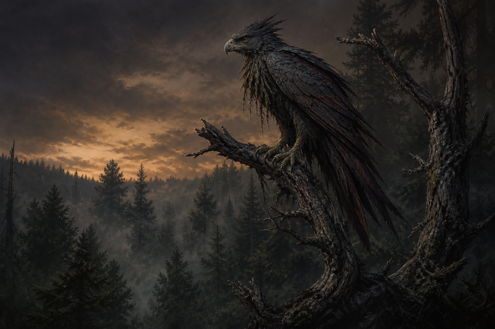

Chapter Three
Otis the BarkMole
Last story edit — August 19, 2026 at 9:33 PM CT · Work in progress
Otis just fell out of a tree one day. No kidding.
There were all kinds of moles in the forest: TreeMoles, TwigMoles, MossMoles, and BarkMoles were the most common in those parts. Most moles were wild animals, not to be tamed. Humanis hunted them for meat, fur, and sometimes, it seemed, for fun.
BarkMoles were different. They were known to bond with Staglights, though usually both had to be young. It was almost always a female BarkMole and a young male Staglight. Nobody could say exactly why. Old Staglights had explanations, but none of them agreed with one another and most involved the moon, the smell of sap, or a female BarkMole having better sense than a young male Staglight.
In this case, it was Otis and Steegs.
Otis had been abandoned after her mother and siblings were hunted and eaten by Grimkites, fierce birds of prey in the forest that hunted moles—usually the young, and sometimes the mother too. Somehow Otis survived. She found the new rented tree house where Katah and the boys had just moved and climbed higher than a small creature with that much fur had any business climbing.
Steegs found her sitting beneath a few leaves in his branch room. She had made herself so small he might have missed her, except that she sneezed.
He turned toward the sound.
Otis saw him, slipped, and fell straight onto him.
Both of them were startled.
Steegs landed on his back with the BarkMole on his chest. Otis froze. She was stout as a small dog and twice as determined, with bark-dark fur, twiggy whiskers, and a small permanent sneer that made her look meaner than she was.
Then Steegs started laughing.
Otis stopped, looked at him quizzically, coughed once, and gave a little snarl.
“Hey,” Steegs said. “You okay there?”
Otis stared back, trying to understand.
“Looks like you’re going to make it. Where’s your family?”
Otis looked down sheepishly.
Steegs stopped laughing. “Hmm,” he said. “I get it.”
He sat up slowly so he would not scare her. “How about you hang out here? I can get some toasted nuts for later. But don’t make too much noise, or those two”—he pointed down a branch or two toward Tah and Tel—“will torment you.”
Otis sneered. Hmmmph.
“Okay. But I warned you. For now, let’s keep the bark shedding easy. I’ll call you Otis. I’m SteegLahg of the Staglight Forest.”
He gave her a small salute.
Otis moved one clawed foot forward, trying to imitate him.
Steegs considered this an excellent beginning.
Otis yawned, curled into the leaves, and seemed to find her place right quick. Steegs was happy to have a new friend, but he knew Katah would not allow it right away.
“Keep it a secret,” he whispered.
Otis slept inside Steegs’ tool belt that first night. By morning, she had chewed through the strap that had been rubbing his hip for months. After that, he considered her hired.
Keeping her silent—or hidden—was going to be another matter.
By the second morning, one of Tah’s gloves was gone. By supper, Tel’s left glove had vanished too. Both boys accused the other one. Tah claimed Tel had borrowed his by mistake. Tel said he would rather put his hand in a squirrel hole.
Steegs said nothing. Otis sat inside the fold of his shirt with only her whiskers showing.
Two days later, Bosoko found both gloves in a corner of his shed, tucked beside a small dish where he kept treats for animals that knew better than to ask. He did not mention it. He only looked toward the tree house, saw Otis watching from the lower branches, and put one extra toasted nut in the dish.
Nobody seemed to know why the gloves kept finding their way to Bosoko’s shed.
The secret ended at breakfast.
Katah had made beans with pine nuts, eggs, and a little fried root bread. Tah was talking with his mouth full. Tel was complaining that his remaining glove smelled like shed dirt. Steegs had Otis tucked inside his tool belt beneath the table, where she had been warned—very clearly—not to move.
Then Katah set the bean bowl down.
Otis moved.
She came out from under Steegs’ chair, climbed the table leg like it had insulted her, and launched herself directly into the center of the breakfast table.
The bean bowl tipped. Pine nuts scattered. Tah shouted and nearly fell backward off his stool. Tel jumped up so fast his knee struck the underside of the table.
“A rat!” Tel yelled.
Otis coughed, planted her little feet in the beans, and gave Tel the strongest sneer her face could manage.
“She is not a rat,” Steegs said too quickly.
Everyone looked at him.
Katah closed her eyes for one long second. “SteegLahg.”
“She fell out of a tree,” he said.
“Of course she did,” Katah said.
“She has nowhere else to go.”
Otis looked at Katah. Her sneer softened only a little.
Katah looked at the ruined beans, the fur on the table, and Steegs’ face trying very hard not to ask for something. “That animal is a nuisance,” she said.
“She has a name,” Steegs said. “Otis.”
Tel pointed at her. “Otis stole my glove.”
Tah pointed at his own bare hand. “And mine.”
Otis looked at both of them as if she had done no such thing and would do it again if necessary.
Katah picked up the bean bowl. “She stays out of the food. She stays out of beds. She stays away from the roof patches. And if she chews another strap, it had better be one that needs chewing.”
Steegs broke into a smile. “So she can stay?”
“I said she is a nuisance,” Katah replied. “Do not make more of it.”
Humanis candy was another matter entirely.
At Harvest Moon, when the Staglights traded, feasted, and pretended they had no reason to envy Humanis sweets, Tel came home with a small wrapped bundle of candy. He hid it badly. Otis found it quickly.
Nobody saw her eat it. They only heard the trouble later. Otis had puked bright colors across the branch-room floor: red, blue, yellow, and one purple shade nobody trusted. Steegs was furious. Katah was beyond furious.
She made both of them sleep outside that night. Otis curled against Steegs beneath a folded blanket while he tried to clean the mess with a rag, cold water, and a level of regret he did not enjoy. Tel stood in the doorway with his arms folded and looked far too pleased with himself.
Cleaning up the mess was not fun. No sir.
Later that week, Steegs saw Katah leave a small scrap of fried root bread beside the stove. Another day, he saw her scratch Otis between the ears while she thought nobody was watching. Once, when Otis had fallen asleep in a basket of clean cloth, Katah bent down and kissed the top of her head.
She looked up and saw Steegs watching.
“Do not make anything of it,” Katah said.
“I would not dare,” Steegs said.
Tel and Otis annoyed one another from that day forward. Tel called her a shed rat. Otis hid his gloves, chewed the ends of his bootlaces, and once sat on his folded shirt until he was late to tree learning. When Tel tried to shoo her away, she bared her little teeth and sneered like a creature with a long list of grievances.
Steegs thought they would get along eventually.
They did not.
